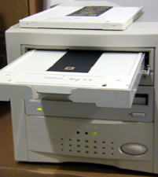

Operating Documentation
Direction 5114045-800, Rev# 10
LightSpeed 4.X Service Information (Advanced)
Operating Documentation |
The Global Console - Linux uses a DVD-RAM (Digital Versatile Disc - Random Access Memory) drive for saving system state - a function performed by the MOD on previous consoles. The DVD-RAM drive is physically located in the SCSI tower, which sits on the console table top. Illustration 1 shows a DVD-RAM disk (cartridge style) in the drawer of the DVD-RAM drive.
Illustration 1: DVD-RAM drive (Global Console - Linux)

There are several different types of recordable DVDs available in today’s market, including:
DVD-R (allows one-time recording)
DVD-RW (allows more than 100 cycles of recording and erasing)
DVD-RAM (allows more than 100,000 cycles of recording and erasing)
DVD+R (allows one-time recording)
DVD+RW (allows multiple cycles of recording and erasing)
The DVD-R/RW and DVD-RAM formats have been ratified by the DVD forum, whereas the DVD+R/RW formats have not. More importantly, these formats are not 100% compatible with one another, and a DVD of one format may not work in a different format drive. The utmost care must be taken to ensure that only DVD-RAM type disks are used with the available DVD-RAM drive.
DVD-RAMs have a maximum data storage capacity of 4.7 GB. This provides nearly seven times the data storage capacity of a CD-R, which has a 700 MB limit, and nearly four times the capacity of the MOD disks, which have a maximum data capacity of 1.2 GB.
DVD-RAMs are the only DVDs that come in a cartridge and as a bare disc (The Global Console - Linux uses cartridge style DVDs). They are NOT readable by standard DVD-ROM drives. They can only be read by compatible DVD-RAM compatible drives.